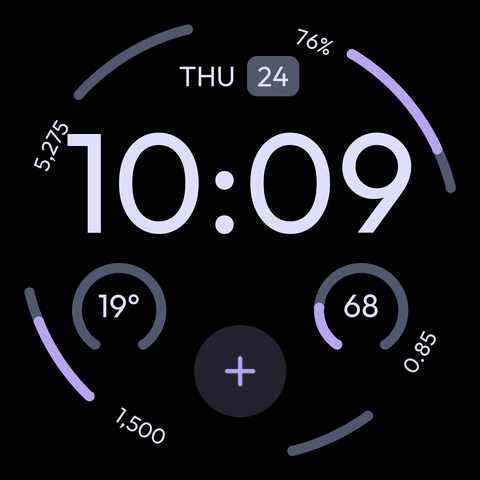

Sample data · seven editable slots
A reproducible starting point for Pixel Watch. Layout preview with sample data; this is not a Wear OS emulator.

Sample data · seven editable slots
Edit tools/generate_face.py, then runpython tools/generate_face.pypython tools/render_preview.py
Refresh this page to see the changes.
Font positioning, provider icons, live updates, tap targets and locale behavior must be checked on Wear OS.